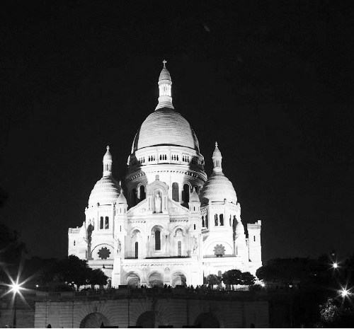

Tôi đến Montmatre lần đầu tiên như bất kỳ người nào mới đến Paris: đến để thăm quan, để chiêm ngưỡng vẻ đẹp của một nhà thờ được xây bằng đá trắng trên một ngọn đồi cao phía bắc Paris. Từ đó bạn còn có thể phóng tầm mắt xuống toàn cảnh Paris đầy thơ mộng.
Bạn có thể hình dung ra rằng Paris nằm trên một vùng bằng phẳng được bao quanh bởi rất nhiều rừng và đồi núi. Từ trung tâm Paris đi ra bất cứ hướng nào các con đường cũng đều phải lên dốc để vượt qua các vùng đồi cao hơn trung tâm Paris. Tuy nhiên, đó là khi bạn đã bắt đầu ở khá xa (khoảng 20km nếu tính từ Mốc số 0).

Montmatre. (Ảnh: Nguyễn Hồng Long)
Montmatre là tên của ngọn đồi nơi nhà thờ Sacré Cœur được xây dựng, nhưng có thể nói là ngọn đồi cao gần trung tâm Paris nhất, và nó vẫn còn nằm trong một quận nội thành của Paris: quận 18.
Từ rất xa, bạn đã bắt đầu có thể cảm nhận được sự kỳ vĩ của quần thể kiến trúc, phong cảnh ở đây bởi nhà thờ lớn với những mái vòm rất cao ở trên ngọn đồi cao, khiến nó được nhìn thấy từ rất nhiều nơi trong Paris, nếu bạn có một khoảng trống đủ rộng. Khi đến gần, bạn sẽ càng ấn tượng hơn bởi nhà thờ được xây dựng hoàn toàn bằng những tảng đá lớn, màu trắng, khiến nó phản chiếu ánh sáng trên cao và càng trở nên lấp lánh thậm chí đến chói mắt vào những ngày nắng to.
Sau Nhà thờ Đức Bà (với kiến trúc của một Cathédrale), Sacré-Cœur có lẽ là công trình kiến trúc tôn giáo được biết đến nhiều thứ hai ở Paris, nhưng kiến trúc của nó hoàn toàn khác, bởi Sacré-Cœur mang phong cách Basilique. Tôi sẽ không có thời gian để đi sâu vào phân tích sự khác nhau giữa hai phong cách kiến trúc và tính sử dụng của Cathédrale và Basilique, bạn có thể hiểu đơn giản là hai kiểu nhà thờ Thiên chúa giáo.
Sacré Cœur được khởi công xây dựng từ năm 1875 nhưng trải qua rất nhiều thăng trầm lịch sử và bị gián đoạn bởi chiến tranh, nó chỉ thực sự được hoàn thành vào năm 1923. Mái vòm chính của nhà thờ cao đến 83 mét. Và phía bên trong, vòm trần được khảm đá cũng trở thành một bức tranh khảm đá lớn nhất của Pháp với diện tích 474m2. Tòa tháp hình vuông được xây dựng làm thành tháp chuông, với quả chuông cũng được coi là lớn nhất nước Pháp: đường kính 3 mét và cân nặng gần 19 tấn, riêng cái búa dùng để đánh chiếc chuông này cũng đã nặng đến 1.200 kg. Vài nét như vậy có lẽ đã đủ để bạn hình dung ra sự kỳ vĩ của công trình này. Thường thì bạn sẽ phải tự hỏi mình: làm thế nào mà người xưa, với những phương tiện thô sơ của mình, có thể xây dựng được trên một quả đồi cao những tòa tháp từ những phiến đá khổng lồ như thế? Dù đó chưa phải là Kim tự Tháp, nhưng có lẽ cũng đủ để bạn phải hỏi rằng: Có giới hạn nào cho sức lao động, cho ý chí của con người không? Có ngọn núi nào mà người ta không thể vượt qua?
Sau khi đã vào thăm nhà thờ, khi những cảm xúc ngạc nhiên, thán phục về công trình này tạm lắng xuống cũng là lúc bạn sẽ để ý đến cảnh đẹp phía bên ngoài, đến những điểm nhìn xuống toàn cảnh Paris cực kỳ sống động. Ngay trước mặt nhà thờ, người ta xây những bậc thang rất rộng, xen lẫn vườn hoa để lên xuống và để khách thăm quan có thể ngồi lại, nhìn xuống phong cảnh Paris. Ở đây cũng là nơi các nghệ sĩ đường phố đàn hát, biểu diễn nhạc kịch, múa rối, ảo thuật. Không khí lúc nào cũng náo nhiệt. Gần đó là khu chợ, vẫn còn giữ được rất nhiều nét kiến trúc và văn hóa cổ xưa của Paris với những quán nhỏ ngoài trời, những nghệ sĩ hát rong, những họa sĩ vẽ tranh đường phố.
Ấn tượng của tôi với Montmatre không chỉ đến từ nhà thờ đẹp oai nghiêm trên đỉnh đồi, từ phong cảnh panorama có thể nhìn thấy của Paris mà còn từ những con phố nhỏ, hay nói đúng hơn là những con dốc nhỏ ở bất cứ một góc nào, cái có bậc thang, cái lát đá, nhỏ hẹp ngoằn nghèo, với những cột đèn, những bức tường cây leo hết sức thơ mộng và bí hiểm. Ở trong đó, đôi khi bạn không có cảm giác đang ở giữa Paris hiện đại, hoa lệ mà như đang du lịch ở một làng cổ yên bình, lãng mạn, không phải ngẫu nhiên mà người ta gọi Montmatre là ngọn đồi nghệ sĩ, hay ngọn đồi tình yêu của Paris.
Và tất nhiên, khi đến đó, cũng hãy dè chừng với các tệ nạn, các phiền toái giống như ở bất cứ điểm du lịch đông đúc nào: có móc túi, có lừa đảo, có níu kéo mời mua hàng, có ăn xin… Các điểm đổi tiền cũng là một kiểu lừa đảo trắng trợn: tôi có người bạn mới tới du lịch, muốn đổi tiền đô-la sang euro. Mặc dù tôi đã khuyên không nên đổi ở những điểm du lịch thế này, cậu vẫn khăng khăng: “Yên tâm, tao đã xem tỷ giá. 100 đô ăn 76 euro thì cũng OK, tao cần tiền ngay.” Đưa 100 đô ra, gã đại lý đưa lại 50 euro. Trợn mắt lên nhìn, hỏi gã. Gã thậm chí không thèm trả lời, chỉ vào dòng chữ viết bé tí xíu bên dưới (mà có lẽ phải dùng kính lúp mới đọc được) “Phí hoa hồng (dịnh vụ): 30%. Tiền đã đổi rồi không hoàn lại”. Ở Pháp mà cũng “đểu” thế ư? Đúng thật, nhưng cái gã đại lý ấy người Ả rập bạn ạ.
Từ những con dốc tưởng như không thể vượt qua…
Có một đặc điểm nữa của Montmatre mà không phải ai cũng biết: với đặc điểm đồi dốc của mình (có những con phố dẫn lên đồi dốc đến hơn 30%, dài hàng trăm mét, thậm chí hàng cây số) và các con phố vòng vèo uốn khúc, Montmatre là nơi tổ chức hàng năm cuộc đua/ biểu diễn roller (loại patin chỉ với một hàng bánh) và ván trượt tốc độ của các tay trượt đến từ khắp nơi trên thế giới. Nếu bạn đã từng một lần đứng trên ván trượt hay đôi giày patin, roller rồi đến đây tận mắt xem họ đua và biểu diễn, bạn sẽ không khỏi rùng mình khi thấy những tay trượt thả mình lao dốc, nhảy qua các chướng ngại vật, vượt qua những khúc cua tay áo với tốc độ khủng khiếp. Bạn sẽ lại tự hỏi liệu có giới hạn nào cho sức mạnh, cho sự dũng cảm của con người?
Tôi cũng đã từng hỏi mình như thế khi lần đầu tiên xem cuộc đua. Hồi ấy mới chỉ bắt đầu tập tành trượt roller, tôi đã rất thích môn thể thao này. Cũng phải nói rằng Paris là nơi lý tưởng cho bạn chơi môn này: các quảng trường rộng thênh thang và không lo có ổ gà hay gạch đá, các vỉa hè cũng vậy, gần như phố nào cũng có piste (đường trượt) riêng dành cho người đi xe đạp và roller. Paris cũng là thành phố duy nhất ở châu Âu tổ chức đều đặn mỗi tuần hai lần cuộc dạo chơi miễn phí với xe đạp, roller, patin cho mọi người qua các phố ở Paris với xe cảnh sát đi mở đường, hộ tống, đoàn nhân viên tình nguyện theo giúp đỡ cùng các xe cứu thương đi theo đề phòng tai nạn. Đó giống như một ngày hội cho người trượt roller ở Paris. Không chỉ là người Paris mà vào mùa hè, người từ các tỉnh, cách thành phố lân cận và cả các nước láng giềng cũng đến chơi. Cuộc “dạo phố” nhiều khi có đến hàng chục nghìn người tham dự, trong gần bốn tiếng, xe cảnh sát sẽ mở đường cho bạn đi qua rất nhiều con phố, công trình du lịch của Paris. Mỗi tuần là một hành trình khác nhau nhưng luôn đi một vòng với tổng chiều dài vài chục cây số. Mỗi tuần hai lần: chiều Chủ nhật dành cho mọi đối tượng, kể cả những người vừa tập đi, tối thứ Sáu dành cho người đi giỏi hơn, tốc độ cao hơn và đường đi khó hơn. Tuần nào cũng vậy, quanh năm.
Ngay cả khi bạn không tham gia cuộc hành trình được tổ chức hằng tuần một cách rất quy mô ấy, đi roller hay patin ở Paris cũng thật tuyệt, nhất là vào buổi tối. Bạn không phải quá lo lắng về vấn đề an toàn cho bản thân: không sợ ổ gà, cống rãnh hay vỉa hè không có chỗ, phải nhảy xuống lòng đường. Đầu óc thư thái, bạn sẽ thoải mái ngắm cảnh đẹp ở mỗi con phố Paris. Người mới đến Paris hay đi ngắm các công trình kiến trúc nổi tiếng, người ở Paris lâu lại thích thú khám phá nét đẹp rất đặc trưng mà mới lạ của Paris ở những góc phố, những con ngõ nhỏ vừa cổ kính, vừa tĩnh lặng. Đối với tôi, đi roller ở Paris vừa là môn thể thao, vừa là cách thư giãn tuyệt vời, lại có thể khám phá rất nhiều những cảnh đẹp mới. Không chỉ có thế, roller với tôi còn là phương tiện đi lại cực kỳ cơ động. Khi còn là sinh viên, ngoài giờ học, tôi thường đi làm thêm vào các buổi tối, công việc thường kết thúc vào buổi đêm, khi tàu điện ngầm đã ngừng hoạt động. Những chiếc xe bus đêm thì thưa hơn nhiều và chạy rất đúng giờ, có khi chỉ chậm 10 giây, bạn sẽ phải đứng đợi thêm nửa giờ đồng hồ. Nếu chỗ làm của tôi xa bến bus đêm, roller là phương tiện hiệu quả nhất giúp tôi không lỡ chuyến, và ngay cả khi lỡ chuyến bus cuối cùng, tôi có thể đi roller thẳng về nhà (giả sử nghĩ đến việc đi taxi, chắc tôi chẳng muốn đi làm luôn, vì taxi vào ban đêm ở Paris rất đắt và khó kiếm).
Bởi vậy mà tôi hào hứng tập roller lắm. Nói là tập cho oai chứ lần đầu tiên nhìn thấy đám bạn đi roller, tôi đã đòi đi theo. Chúng nó cho mượn một đôi, bảo leo lên và trượt đi. Tôi chưa đi bao giờ, chẳng sao, để đi được không khó lắm, cứ cắn răng vào ngã một hồi là đi được. Cái khó là phanh lại. Thậm chí muốn phanh bình thường cũng chẳng được, vì lũ bạn tôi đã đi rất giỏi, chúng tháo phanh ra cho đỡ vướng và khi cần thì xoay ngang bàn chân để phanh hoặc có nhiều kỹ thuật khác. Còn tôi không có kỹ thuật gì cả. Cứ thế mà lao. Bình thường thì phải tập một thời gian ở các quảng trường hay sân trượt dành riêng cho roller, nhưng thấy bạn bè đi phố, tôi ham quá, đi theo ngay. Có khi gần đến ngã tư đèn đỏ, thấy tôi phóng nhanh quá, một thằng phải nhảy ra đằng trước mà phanh lại để tôi bám vào, nếu không tôi phải tìm cái cột giới hạn vỉa hè mà ôm lấy để dừng lại. Hoặc đang phóng nhanh trên vỉa hè thấy có người đẩy cái xe nôi, tôi sợ không làm chủ tốc độ đâm vào người ta, liền xoay ngang ra mà lao vào… tường, rồi ngã lăn ra. Tập kiểu ấy thì hơi nguy hiểm nhưng biết đi nhanh lắm. Chỉ sau hai ba lần đi với đám bạn, tôi đã có thể phóng rất nhanh và tất nhiên khi ấy đã biết phanh rồi. Rồi tôi tham gia vào hành trình roller tối thứ Sáu. Quá ấn tượng, quá đông vui. Hàng ngàn người tụ họp, trông ai cũng vui vẻ, háo hức. Có người mang theo cả đài có loa lớn, để trên vai, vừa đi vừa nhảy. Có người thì hóa trang, treo cả đèn nhấp nháy trên người. Trẻ em, người già, phụ nữ, đàn ông đủ mọi lứa tuổi, mọi tầng lớp. Có nhiều người chắc vừa tan sở, còn mặc nguyên complet, cravate cũng đeo roller vào tham gia. Cảnh sát đi xe ô tô mở đường, nhưng cũng có rất nhiều cảnh sát đi roller cùng đoàn để bảo vệ, hướng dẫn người tham gia hoặc cảnh báo các tay trượt quá khích có thể gây nguy hiểm cho bản thân hoặc cho những người khác. Đoàn đua lao vun vút trong đêm qua các con phố trong tiếng reo hò, cổ vũ của người dân hai bên đường. Nhưng không có ai chiến thắng cả, tất cả tham gia vào một ngày hội vừa rèn luyện sức khỏe, vừa đi ngắm cảnh Paris.
Ở Paris cũng có rất nhiều bãi, quảng trường lớn mà dân nghiền Paris thường tụ tập, như quảng trường République, quảng trường trước cửa Nhà thờ Đức Bà hay quảng trường Palais Royal gần điện Louvre. Đến đó bạn sẽ gặp những nhóm trượt roller nghệ thuật vừa luyện tập, biểu diễn vừa xin tiền khách qua đường.
Tôi trở lại với đồi Montmatre, nơi diễn ra cuộc thi roller tốc độ hằng năm. Nhìn họ lao dốc mà sợ. Lúc ấy tôi đã biết đi roller khá tốt rồi mà cũng phải xanh mắt. Các tay đua đều được trang bị quần áo có lớp bảo vệ bằng kim loại và những đôi giày đặc biệt đế thép dùng để phanh, khi họ phanh lại, các tia lửa bắn đỏ rực càng làm bạn thêm ấn tượng. Khi ấy dù tôi có tự tin và liều lĩnh đến mấy cũng nghĩ rằng chắc mình không bao giờ dám đứng lên đôi roller để lao xuống những con dốc ấy.
Đôi khi tôi cảm thấy rằng ông trời hay “số phận” có vẻ luôn muốn thử thách những “giới hạn” của tôi trong mọi chuyện thì phải (mặc dù tôi đã từng nói rằng mình không tin vào số phận). Chỉ không lâu sau đó, tôi tình cờ được một người bạn giới thiệu vào làm ở một nhà hàng trên đồi Montmatre, đúng con phố nơi tổ chức cuộc đua mà tôi đứng xem hôm nào.
Tôi làm batender, đứng pha rượu. Công việc thường kết thúc vào lúc một giờ sáng. Để ra bến tàu điện ngầm có tàu đi thẳng về nhà tôi cho kịp chuyến cuối cùng của đêm, tôi thường phải chạy rất nhanh. Chạy nhanh hết sức mà nhiều khi vẫn chậm vài phút. Tôi bắt đầu nghĩ đến (dù không khỏi e ngại) việc đi roller. Ban đầu tôi mang roller theo, nhưng chạy bộ qua khỏi đoạn dốc nhất rồi mới dám đeo vào để trượt đi. Dần dần, tôi đeo roller ngày càng sớm hơn, ở đoạn dốc ngày càng cao hơn. Và đến một đêm, đứng trên đỉnh dốc, nhìn xuống, tôi không còn cảm giác sợ hãi như ngày nào nữa. Tôi lao xuống, tất nhiên không thể nhanh như những tay đua chuyên nghiệp vì đôi lúc tôi phải phanh lại giảm tốc độ giữa chừng, nhưng bỗng cảm thấy tự hào như thể mình vừa vượt qua một ngọn núi mà trước đây chỉ dám ngước nhìn. Và tôi trả lời câu hỏi của tôi hôm nào “Chẳng có ngọn núi nào mà (người) ta không thể vượt qua”.
Đó chỉ là một câu chuyện nhỏ, một ví dụ nhỏ trong suốt cuộc hành trình của đời tôi, nhưng cũng là một khoảnh khắc quan trọng để tôi hiểu ra rằng: Chỉ cần ý chí và tự tin, cộng thêm sự chuẩn bị tốt và lòng quyết tâm, bạn (và tôi) sẽ làm được mọi chuyện (hay ít nhất cũng là rất nhiều chuyện mà ngay cả bạn (và tôi) cũng không ngờ tới).
Đến những suy nghĩ về khả năng và giới hạn của con người
Tôi vẫn nghĩ rằng khả năng, sức chịu đựng và sức mạnh của con người là vô hạn, hay ít nhất vẫn chưa ai xác định được đâu là giới hạn. Hãy nhìn vào những kỷ lục liên tiếp bị phá vỡ trong mọi lĩnh vực để thấy điều đó. Có những thứ chúng ta từng coi là không tưởng, là vượt quá giới hạn khả năng của con người, đến ngày nào đó cũng có người làm được, giống như việc chạy 100 mét dưới 10 giây trong nhiều năm đã được xác định là một điều bất khả của loài người, thậm chí được chứng minh bằng nhiều công trình khoa học. Cá nhân tôi nghĩ rằng, sức mạnh cơ bắp, vật chất của con người có thể là hữu hạn, nhưng với ý chí, tinh thần, sự luyện tập cùng với quyết tâm của mình thì những gì con người làm được có thể là vô hạn. Nói đúng hơn, sự hữu hạn trong khả năng của ta là do ta tự đặt ra, tự ghi nhận và nghĩ mình không vượt qua được, hoặc chưa bao giờ có điều kiện để khám phá bản thân, hoặc do ta không biết cách phát huy hết. Cũng giống như bình thường bạn chạy rất chậm và bạn chỉ chạy một đoạn ngắn đã mệt, đã thấy muốn ngất đi. Nhưng nếu có một con chó hung dữ tuột xích ở đâu lao vào bạn, tôi dám chắc bạn sẽ chạy nhanh gấp đôi tốc độ mà tự bạn nghĩ là cực đại, và bạn sẽ chạy xa gấp nhiều lần quãng đường mà thường ngày bạn nghĩ mình không thể vượt qua. Như hình ảnh cây gậy và củ cà rốt, tôi nghĩ rằng có ít nhất hai động lực khiến bạn có thể vượt qua giới hạn của bản thân: hoặc là có mối hiểm nguy, đe dọa, hình phạt sau lưng bạn, hoặc là một phần thưởng ai đó hứa hẹn với bạn, một mục đích bạn tự đặt ra phía trước để không ngừng vươn lên. Tôi thì thích củ cà rốt, dù ta sẽ khó cảm nhận, khó chạm vào củ cà rốt hơn là cảm thấy cái gậy lúc nào cũng nóng bỏng sau lưng. Nhưng cái cách đặt ra cho mình những mục tiêu và quyết tâm hoàn thành khiến cho tôi thấy mình tích cực và sáng tạo hơn rất nhiều so với khi bị ép buộc. Và cứ thế, tôi tiến lên phía trước, tôi vượt qua những giới hạn có thể không phải là phi thường, nhưng nó khiến tôi thêm tự tin để chạm tới những củ cà rốt to hơn, ở xa hơn.
Đó cũng là câu chuyện của tôi về đồi Montmatre, nơi mà tôi không chỉ say đắm trong cảnh sắc, thán phục sức lao động, sáng tạo của loài người mà còn tự tìm thấy cho mình một chân lý sống rất giản đơn.
Trong cuộc đời mình, sẽ có một hoặc rất nhiều lần bạn đứng trước những “ngọn núi”, như một sự thách thức bạn đặt ra cho chính mình, như trò trêu ngươi của “định mệnh”, như một thử thách đột nhiên ập đến hay từ trên trời rơi xuống ngáng đường bạn. Và bạn tự hỏi mình “Liệu ta có thể vượt qua?”
Những “ngọn núi” trong sự nghiệp học hành của tôi
Trong suốt những năm “du học” của mình, tôi nhiều lần phải đối mặt với những ngọn núi như thế. Có thể các bạn sẽ bảo rằng tôi kể về chuyến “du học” của mình mà không thấy nói nhiều đến chuyện học, chỉ thấy đi làm, đi làm và đi làm. Có chứ, trong chương này tôi sẽ kể cho bạn về chuyện đi học của tôi. Bởi vì hết thảy những công việc ngổn ngang kia chỉ là phương tiện, là giải pháp nhất thời để tôi có thể tồn tại và tiếp tục mục đích chính của mình: học. Học chính là ngọn núi lớn nhất của tôi khi ấy, mà tất cả những khó khăn, vất vả chịu đựng khác chỉ là những đồi dốc nho nhỏ trong cuộc hành trình vượt núi.
Ai đó sẽ bảo rằng, việc học làm gì khó khăn đến thế! Nhưng nếu ai đã từng đi du học với hai bàn tay trắng, đặt chân đến một đất nước xa lạ mà không biết nói tiếng bản địa chắc sẽ hiểu vấn đề của tôi. Tôi có thể tự hào rằng: trong suốt những năm tháng cắp sách đến trường, trừ mấy năm cấp ba “nổi loạn”, tôi luôn là một học sinh giỏi, thậm chí là xuất sắc mặc dù tôi không đầu tư nhiều thời gian cho việc học. Có lẽ một phần vì tôi thông minh (theo nhận xét của mọi người) và có trí nhớ rất tốt. Tôi cũng có năng khiếu về ngoại ngữ, học nhiều thứ tiếng: tiếng Nga, tiếng Nhật, tiếng Anh, đặc biệt là tiếng Anh, từ cấp hai đến đại học, tôi luôn đạt điểm xuất sắc, từng đoạt giải trong nhiều cuộc thi. Tôi có nhiều “va chạm” xã hội nhờ các hoạt động ngoại khóa, đi làm và dạy thêm khiến tôi đủ “dày dạn” và tự tin. Đó là những yếu tố quan trọng trong hành trang du học của tôi. Ấy vậy mà khi đặt chân đến Pháp, tôi đã đi từ “bàng hoàng” này sang thất vọng khác về khả năng, trình độ của mình. Ngay cả tiếng Anh tôi tưởng là thứ vũ khí sắc bén của bản thân, sang đến đây mới thấy chẳng khác gì con dao bằng gỗ.
Một đặc điểm nổi bật của người học ngoại ngữ ở Việt Nam (ít nhất là thời của tôi) là chỉ tu luyện ngữ pháp, luyện đọc, luyện viết để luôn đạt điểm cao trong thi cử. Kỹ năng nghe và nói không được coi trọng, và trong cuộc sống cũng không có điều kiện để thực hành (đó là tôi còn đi làm cả năm trời cho một văn phòng đại diện nước ngoài, bạn bè tôi chắc hẳn rất nhiều người cho đến khi ra trường chưa từng nói một câu tiếng Anh nào ở ngoài lớp học của mình). Ngay cả nếu như ở Việt Nam bạn đã từng làm việc, trao đổi với người nói tiếng Anh, bạn cũng sẽ thấy dễ dàng hơn nhiều. Bởi khi ấy, họ ý thức được rằng họ đang nói tiếng của họ với một người nước ngoài, cũng giống như bạn nói tiếng Việt với một người ngoại quốc đang tập học tiếng Việt hay với một đứa trẻ bi bô tập nói, bao giờ bạn cũng có xu hướng nói chậm lại, nói rõ hơn. Còn khi bạn đến đất nước của họ, hoặc khi họ ở trong môi trường mà họ không còn để ý đến chuyện “mình đang nói một thứ tiếng xa lạ”, hoặc họ coi như bạn nghiễm nhiên có đủ trình độ để nói chuyện “sòng phẳng” với họ thì khi ấy bạn sẽ có điều kiện để nhận ra trình độ thật của mình.
Tôi đã từng bàng hoàng khi ngồi nghe giờ học Marketing đầu tiên do một ông thầy người Anh giảng. Trong hơn hai giờ đồng hồ, có lẽ tôi chỉ hiểu được vài câu chào hỏi ban đầu và lời giới thiệu về môn học. Suốt thời gian còn lại, tôi vò đầu, tôi ra ngoài rửa mặt cho tỉnh, tôi lấy cớ ra ngoài để khi trở lại ngồi vào bàn ngay sát thầy, tôi có thể tập trung cao độ để đọc chữ qua miệng thầy, tôi tự động viên mình, tìm đủ biện pháp để cái thứ ngôn ngữ đang tuôn ra như thác nước kia chui vào tai mình một chút. Không được. Cái bàng hoàng thất vọng của tôi khi ấy còn lớn hơn nhiều sự thất vọng về tháp Eiffel không quá đẹp hay Paris không hoành tráng như tôi tưởng. Bởi lần này là tôi thất vọng về chính bản thân mình. Tôi đã cay cú đến nghẹn cổ họng khi lần đầu tiên sang Anh, ở một quán cà phê, nói đi nói lại ba lần thứ mình muốn mà không ai hiểu. Nhưng dù sao tôi đã học tiếng Anh hàng chục năm, đã có căn bản rồi nên tôi có thể xoay xở được. Gần hai năm sau ngày nhập học, tôi giành được bằng MBA, kết thúc bằng kỳ bảo vệ luận văn gần hai giờ đồng hồ trước hội đồng chấm thi người Anh, Mỹ và được khen ngợi.
Tiếng Pháp mới thật sự là một “ngọn núi”, nhất là trong hoàn cảnh của tôi. Ở Việt Nam tôi đã từng học tiếng Pháp, học cho vui thôi chứ không thấy có gì thiết thực. Học rồi quên sạch. Sang Pháp, trong hai năm đầu, ở trường các môn học của tôi đều bằng tiếng Anh, ở nhà, có chút thời gian rảnh là tôi đi làm, mà môi trường đi làm của tôi là những quán ăn người Việt, người Hoa, nói tiếng Việt, nhất là nói tục chắc còn hơn lúc tôi ở Hà Nội. Đi chợ chúng tôi cũng vào chợ châu Á, nếu có vào chợ “Tây” thì tiếng Pháp cũng chỉ dừng lại ở “làm ơn, xin lỗi, bao nhiêu tiền”. Đừng bao giờ nghĩ rằng khi bạn sống ở nước ngoài, hằng ngày tiếp xúc với tiếng bản xứ thì thứ tiếng ấy sẽ tự ngấm vào đầu bạn. Sẽ không có chuyện đó nếu bạn không đầu tư thời gian, không học nghiêm túc và không quyết tâm cao độ. Nhất là tiếng Pháp. Tôi quen nhiều người đã ở ba bốn chục năm bên này, tiếng Pháp cũng chỉ dừng lại ở “làm ơn, xin lỗi, cảm ơn” và “bao nhiêu tiền” mà thôi.
Tôi học tiếng Anh không mấy vất vả, chỉ cần rèn luyện vài tháng là đã cảm thấy tự tin khi gặp ai đó, ít nhất cũng nói chuyện được vài câu. Còn tiếng Pháp, học mãi mà khi mở miệng ra là ấp a ấp úng, muốn nói đúng thì méo hết cả mồm, mỏi hết cả hệ nhai. Thậm chí mới chỉ nói “xin chào”, người đối diện đã biết trình độ tiếng Pháp của tôi tồi tệ đến thế nào rồi.
Trong suốt những năm ở Pháp, thậm chí đến bây giờ, ngoài một khóa học mang tính giới thiệu làm quen trong chương trình MBA, tôi chưa từng được học một khóa tiếng Pháp nghiêm túc. Lý do: đi làm, đi làm và đi làm. Bởi thế sự học của tôi càng khốn khổ.
Có bằng MBA rồi, tôi hy vọng xin vào thực tập ở một công ty nào đó để kiếm chút kinh nghiệm, nghĩ rằng đi du học mà không được làm việc thật sự trong môi trường bản xứ thì thà ở Việt Nam mà đăng ký học một khóa trong các trường quốc tế còn hơn. Lúc ấy tôi hiểu ra rằng, ở Pháp, trừ khi bạn là người nói tiếng Anh mẹ đẻ và muốn làm giáo viên tiếng Anh, hoặc đã có rất nhiều năm kinh nghiệm trong lĩnh vực của bạn, còn nếu không nói được chút tiếng Pháp nào, đừng hy vọng kiếm việc làm. Chưa kể tấm bằng MBA của tôi chỉ là bằng về quản lý, quản trị kinh doanh chung chung, chứ không thật sự có một chuyên ngành nào cả. Nhảy vào lĩnh vực nào cũng gặp những “chú” Pháp xịn, có bằng cao học chuyên sâu thì cạnh tranh thế nào?
Lúc ấy tôi không đủ thời gian để có thể đầu tư học lại tiếng Pháp từ đầu. Tôi đã 25 tuổi, nếu học lại tiếng Pháp rồi học thêm một bằng cao học chuyên ngành trong hệ thống các trường Pháp thì bao giờ mới ra trường, bao giờ mới đi làm? Mà đâu phải nói đi học là có tiền học ngay, còn phải “đi cày” nhiều mới đủ tiền để đi học. Hết khóa MBA, tôi trở thành diện sinh viên tự túc 100%, tiền học tất nhiên cũng tự trả. Bởi vậy tôi quyết định đốt cháy thời gian: đi làm nhà hàng một năm đủ dành tiền cho một khóa cao học chuyên ngành tài chính, trong thời gian ấy thì tự học tiếng Pháp. Nhưng việc “tự học” ấy của tôi không suôn sẻ mà bị gián đoạn bởi những mệt nhọc, quá sức của hơn 12 giờ lao động chân tay mỗi ngày, của những thăng trầm tình cảm, tinh thần mà tôi trải qua. Thậm chí nhiều lúc tôi bị lao vào cơn lốc mà rất nhiều người đi du học vướng phải: ham kiếm tiền hơn đi học. Ở châu Âu, kiếm tiền, dù là bằng lao động chân tay, đến lúc nào đó cũng thấy “khá” hơn nhiều so với ở Việt Nam. Nhịp sống đó cuốn tôi đi, càng ngày càng ngại học, thích tính đếm mình để dành được bao nhiêu tiền hơn là nghĩ xem mình sẽ đầu tư nó vào việc gì.
Cho đến khi đã làm đăng ký vào trường, phải đi phỏng vấn đầu vào, tiếng Pháp của tôi vẫn còn bập bẹ, nói được vài câu. Đi phỏng vấn, tôi phải ngồi hình dung những câu người ta có thể hỏi mình, rồi chuẩn bị trước câu trả lời, nhờ người khác chỉnh sửa, học thuộc lòng. Khi phỏng vấn, nghe thấy cái gì có tí chút liên quan đến “tủ” thì lôi ra “trả bài”. May quá cũng qua được.
Nhưng khi vào học mới là một cuộc chiến. Lần này không ngoáy tai nữa mà liên tục rửa mặt, bởi một ngày tám tiếng học mà tôi như “vịt nghe sấm”, căng đầu ra cũng không hiểu chữ nào. Những lúc như vậy buồn ngủ khủng khiếp. Học tám tiếng mỗi ngày thì tôi mất thêm bốn giờ ngoài hàng photo để chụp lại vở của bạn, từng bạn một, của cả lớp, vì học sinh ở Pháp không viết nắn nót, họ viết cốt để đọc được. Nếu họ đi thi thì họ còn cố gắng viết để người khác đọc được, chứ chép bài chỉ cần mình họ hiểu là đủ. Lại còn viết tắt, viết tắt kinh khủng. Tôi tự bảo từ tiếng Việt mình ngắn thế mà khi chép bài mình còn viết tắt, nữa là tiếng Pháp. Những từ viết tắt chỉ người Pháp hiểu được, với mình thì đành chịu. Tôi photo miệt mài cho đến khi tìm được một cô chữ đẹp nhất, đọc dễ dàng, chỉ hiềm cứ ba từ thì viết tắt hai. Lúc ấy tôi tìm cách làm thân rồi kiếm cớ ngồi cạnh, rồi năn nỉ để người ta vì mình mà ít viết tắt đi, đại loại trong giờ học, người ta chép bài thì mình ngồi canh, cứ thấy viết tắt thì mình ho hay gãi đầu gãi tai để nhắc, nhiều khi người ta lườm mình rồi thở dài, mình cũng phải nhe răng ra cười nịnh. Photo vở tất nhiên không đủ, bởi không phải cái gì người ta nghe, người ta hiểu cũng chép vào vở. Khi họ nghe hiểu được thì thành kiến thức ở trong đầu họ, còn mình đâu nghe thấy gì. Vì thế mà phải tìm thêm sách. May sao ở Pháp, người ta cho mua sách rồi trả lại được. Cứ ra hàng sách ngồi đọc, thấy đúng cái mình cần thì mua, rồi chạy đi photo những phần quan trọng, rồi quay lại trả. Như thế đỡ được chút tiền, vì tiền photo cũng đắt gần bằng tiền mua sách, nhưng cả ngày đứng ngoài tiệm photo, còn chưa kể đi làm thêm, gần như tôi không có thời gian để học.
Ấy là lúc học, lúc thi còn khổ hơn. Tôi nhớ lần đầu tiên thi môn Phân tích tài chính. Nghĩ rằng phân tích tài chính thì số là chính, chữ là phụ (có lẽ vì vậy mà rất nhiều sinh viên Việt Nam ở nước ngoài hay chọn học chuyên ngành tài chính hoặc tin học vì nghĩ “ít chữ nhiều số”). Vậy mà đề dài 16 trang A4. Thời gian thi ba tiếng, tôi đọc xong đề bài mất gần hai tiếng, khi bắt đầu viết chữ đầu tiên đã có người nộp bài đi về rồi. Các trường tư của Pháp khi trông thi rất nghiêm túc và khắt khe. Trong gần hai năm tôi học khoảng hơn 20 môn, mỗi môn thi hai kỳ. Ngần ấy môn không môn nào được dưới trung bình, nếu không thì không được cấp bằng. Nếu dưới trung bình có thể thi lại để nâng điểm. Nhưng chỉ được phép thi lại ba lần. Giả sử khi bạn nghe thông báo phải thi lại lần thứ tư, bạn có thể hiểu rằng việc học tiếp chỉ để lấy kiến thức và giấy chứng nhận đã theo khóa học, còn bằng thì không bao giờ chạm tay vào được nữa. Và khổ nỗi, đối với giáo viên ở đây, làm bài mà đúng hết thì mới đạt điểm 14/20 (tương đương điểm 7 ở nước ta). Muốn đạt điểm cao hơn bạn phải thật sự xuất sắc, phải đưa ra cách giải khác với cách giáo viên dạy, phải đưa ra những luận điểm mới chứ không phải bê nguyên si từ trong sách nào đó thì may ra mới được điểm 18, còn điểm 20/20 thì không tồn tại, cũng đúng thôi, chẳng có gì là hoàn hảo tuyệt đối cả. Nếu một trong hai kỳ bạn đạt điểm 6 hay 7 thì gần như chắc chắn môn ấy bạn phải thi lại. Đầu năm lớp tôi có gần 60 người, đến lúc bảo vệ luận văn chỉ còn lại dưới 40 học viên. Các “chiến binh” đã cày ải quá ba lần thi lại đều tự nguyện “hy sinh”. Sinh viên Pháp chiến đấu đã vất vả, sinh viên Việt như tôi còn vất vả gấp trăm lần. Còn nhớ có lần trong phòng thi, gặp từ “khóa” quan trọng mà tôi không biết, tôi giở từ điển tiếng Pháp ra thì bị giáo viên nhắc nhở ngay, dù cả lớp đứng lên bảo vệ tôi. Lúc ấy, cô giáo bảo: “Đã vào trường Pháp, học ở hệ cao học thì nghiễm nhiên phải đủ năng lực tiếng Pháp để học. Không có ngoại lệ”. Sau hơn ba tháng vào trường, kết quả kỳ thi đầu tiên của tôi hết sức tồi tệ. Hơn 10 môn, môn nào khá thì được 8/20, còn lại chỉ 6 hoặc 7, tệ nữa là 4. Tôi nghĩ thầm “Thế là xong”! Tiền học phí là hơn một năm lao động dành dụm của tôi, nếu thất bại thì quả là “thảm họa”. Vậy là ngày đi học, tối đi làm, đi làm về tôi lại “cày” đèn sách đến ba giờ sáng. Kỳ thi thứ hai, đối với tôi, đã giống như kỳ quyết định. Tôi xem điểm kỳ trước và tự đặt cho mình mức tối thiểu của từng môn, đủ để kéo điểm kỳ trước lên trung bình. Thế nghĩa là môn nào cũng phải thấp nhất là 12. Và tôi làm được, kể cả môn luật với tôi là môn kinh hoàng nhất, kỳ đầu tôi chỉ đạt điểm 4, tôi cũng “kéo” được lên. Kết quả điểm thi dán lên, cả lớp nhìn tôi bằng một con mắt khác: hóa ra cái thằng mở mồm ra là ấp úng, nói chẳng ai hiểu, suốt ngày chỉ cười nịnh, vớ được cuốn vở là chạy mất hút, lúc sau mới quay lại trả ấy, cuối cùng cũng học được, không cần từ điển cũng thi được. Vậy là ngọn núi học hành ấy tôi đã lên được hơn một nửa, và là nửa khó khăn nhất. Rồi cứ đà ấy tôi vượt dốc. Tôi hiểu rằng nếu sinh viên Pháp đã phải cố gắng nhiều vì việc học ở đây không đơn giản là học thuộc lòng, nếu muốn đạt kết quả cao phải thật sự sáng tạo, thật sự phát huy kiến thức của chính bản thân, thì một sinh viên Việt Nam học ở Pháp muốn đạt thành tích tốt càng phải cố gắng hơn gấp 10 lần. Sau này đi làm cũng vậy, người ta cố gắng một thì tôi phải cố hai, ba, không chỉ kiến thức chuyên môn mà phải biến nhiều thứ phụ trợ khác (tiếng Anh, tin học…) mới mong cạnh tranh được với người Pháp, mới mong bù đắp cho điểm yếu của mình là tiếng Pháp và những kiến thức văn hóa, xã hội, lịch sử.
Sẽ có ngày con đường của ta phẳng lặng hơn, ít núi cao vực thẳm hơn. Nhưng với tôi, cuộc sống là cả một quá trình phấn đấu và vượt qua thử thách, vượt qua những ngọn núi lớn nhỏ, không bao giờ dừng lại, ở đâu cũng thế, trong mọi chuyện. Trong cả quan hệ vợ chồng, bố mẹ, con cái, trong cả những cư xử hằng ngày với người thân, bạn bè, đồng nghiệp. Nếu như ta đã vượt qua những núi cao, vực sâu, hãy coi chừng để không bị ngã thật đau bởi một chiếc ổ gà nhỏ hay gãy chân vì một mô đất tí hon trên con đường ta đi.
Đó là “tâm niệm” của riêng tôi, còn mỗi người bằng cách này hay cách khác, luôn vượt qua, nhiều hay ít, những “ngọn núi thử thách”trong cuộc đời. Trong suốt quãng đời du học, tôi đã nhìn thấy, đã trân trọng, ngưỡng mộ rất nhiều những tấm gương học hành và lập nghiệp. Rất nhiều người thành công rực rỡ. Tôi không biết bí quyết của họ là gì, nếu họ chia sẻ những bí quyết của mình, hẳn sẽ giúp ích được cho nhiều người. Tôi chưa làm được điều gì to tát, chỉ mới vượt qua được những khó khăn đầu tiên, nhưng tôi muốn chia sẻ vài kinh nghiệm học tập ở nước ngoài của mình với những ai cảm thấy cần:
- Học ngoại ngữ thì phải ứng dụng, càng nhiều càng tốt. Ngôn ngữ, hiển nhiên và trước tiên là dùng để giao tiếp. Trên ghế nhà trường, kỹ năng viết là rất quan trọng, nhưng cũng đừng bỏ mặc kỹ năng nghe nói của bạn. Đừng nghĩ rằng học lâu, viết giỏi thì tự nhiên sẽ nghe nói được. Tôi biết rất nhiều người, tốt nghiệp đại học, cao học, thậm chí tiến sĩ trong hệ tiếng Pháp mà không đủ tự tin để nói chuyện lưu loát với người Pháp, thậm chí là vài câu đơn giản.Nếu bạn chưa đủ tự tin để bắt chuyện hay trao đổi trực tiếp với người nước ngoài, bạn có thể luyện bằng việc nghe đài, nghe ti vi và nhất là tự đọc to lên mỗi ngày một trang sách hay bài báo. Khi đọc là khi bạn tự nghe và sửa cho mình, cũng là cách cho bạn niềm tin khi cần phải nói trước mặt người khác. Bạn cũng có thể học thuộc lòng những “câu mẫu” chuẩn, hoặc những cụm từ mở đầu, dẫn dắt… những câu, từ mà bạn biết khi ở trong khung cảnh như thế, với ý đại loại như thế, người Pháp sẽ nói câu đó. Học thuộc và áp dụng, ban đầu có thể là máy móc, nhưng nó cho bạn sự tự tin để nói những câu khác sau đó.
- Đừng tự ti rằng mình nói kém. Tôi đã từng có thời gian dài tìm mọi cách để tránh phải nói tiếng Pháp hoặc khi nói, cố gắng nói nhỏ để các “lỗi” của mình không quá lộ. Hoặc nếu một từ nào đó tôi phát âm một vài lần thấy khó, hay bị nhầm thì lần sau tôi tìm cách thay bằng từ khác. Sai lầm. Mình là người nước ngoài, hiển nhiên mình không thể nói tiếng bản địa lưu loát ngay được, chỉ cần đừng ỷ lại mãi vào lý luận đó. Khi ta nói nhỏ hoặc ấp úng, người ta không nghe rõ, sẽ hay hỏi lại, càng khiến ta bối rối và mất tự tin, càng làm ta sợ nói. Nếu bạn nói to, rõ ràng thì ngay cả phát âm chưa đúng, thường người ta vẫn có thể hiểu bạn và điều đó giúp bạn tự tin hơn. Thêm nữa, khi nói to một từ mà ta dễ nghe ra lỗi của mình rồi tự sửa và người đối thoại cũng có thể sửa cho ta, chứ cũng không thể né tránh mãi việc dùng từ đó, bởi nếu ta đã khó khăn với một từ và “trốn” nó, sẽ lại có những từ khác còn khó hơn… Càng làm như thế càng khiến ta chui sâu vào cái vòng tăm tối, luẩn quẩn của sự thiếu tự tin.
- Nếu ta đã vượt qua được sự tự ti, chắc ta sẽ không giấu dốt. Khi có cơ hội thuận lợi, tôi luôn nói chuyện với bạn bè người Pháp và đồng nghiệp sau này khi bắt đầu đi làm, rằng “Tôi nói tiếng Pháp chưa tốt, nếu có thể, hãy giúp tôi nhận ra những từ phát âm còn chưa tốt và chỉ cho tôi cách sửa nó”. Đừng lo, câu nói đó không làm mất đi chút giá trị nào của bạn, mà ngược lại. Hãy hình dung một người nước ngoài tự nhận mình nói tiếng Việt chưa tốt và đề nghị bạn giúp đỡ để nói tốt hơn, chắc chắn bạn sẽ thấy vui vẻ và cảm thấy người đó cởi mở, chân thành hơn. Đó cũng là cách tôi phá đi bức rào ngăn cản trong giao tiếp với nhiều người mà sau này họ trở thành bạn tôi. Đó cũng là cách tôi học tiếng Pháp của người Pháp ngay cả khi không còn ngồi trên ghế nhà trường.
- Khi đã giải quyết được phần học tiếng thì học chuyên môn có lẽ không quá khó. Người Việt nhìn chung có tư chất tốt và chương trình học của Việt Nam nặng hơn rất nhiều so với ở châu Âu (trẻ con Pháp vừa học vừa chơi, cứ học hai ba tháng lại được nghỉ vài tuần, và chẳng có đứa trẻ nào học thêm ngoài giờ trừ khi quá kém), nên một người với sức học bình thường ở Việt Nam cũng có thể theo được chương trình học ở Pháp hay các nước châu Âu. Tuy nhiên muốn đạt kết quả cao thì khó hơn. Bởi họ không thích sinh viên học thuộc lòng, khi học phải có kiến thức sâu và rộng, tức là phải đọc thêm sách, tìm hiểu thêm bên ngoài. Trừ các môn tính toán, bài thi không có lỗi chỉ đạt điểm trung bình khá. Bài đạt điểm cao khi bạn thể hiện được sự hiểu biết của mình và viết ra bằng câu chữ của bạn (dù có thể bạn viết sai chính tả), chứ không chép lại một cuốn sách người khác đã viết. Nên nhớ khi ta viết tiếng Pháp còn chưa trôi chảy như người Pháp, chẳng gì dễ hơn việc phát hiện ta sao chép nguyên bản một câu nào đó.
- Khi thi, nếu bạn còn chưa giỏi tiếng thì đừng giống như tôi, cặm cụi đọc hết cả đề thi. Hãy đọc câu hỏi chính đầu tiên và sau đó tìm trong phần dẫn dắt trên đó những yếu tố giúp bạn trả lời. Khi biết mình cần tìm cái gì thì đọc cũng nhanh hơn và nhớ hơn. Cố gắng đừng nghĩ đến từ điển hay bị ám ảnh bởi một từ mà ta không biết vì những thứ đó chỉ khiến ta lúng túng mất thời gian, trừ khi đó là “từ khóa” có tính quyết định cho câu trả lời. Thường thì ta có thể đoán ra, hiểu được nghĩa của từ đó nhờ văn cảnh của nó, không ngay lập tức thì sau đó một lúc bạn sẽ hiểu ra.
- Nếu các bạn châu Âu không quá nổi trội về những môn tính toán thì hầu hết lại rất giỏi những môn xã hội, địa lý, lịch sử… Họ cũng có tinh thần tự lập và khả năng tổ chức, quản lý tốt hơn nhiều so với đa phần người Việt. Hãy đừng chỉ học từ giáo viên và sách vở, học chính những người bạn xung quanh bạn thì thú vị và trực quan hơn nhiều.
- Trong thời gian đi học và sau này ngay cả khi đã đi làm, tôi hiểu rằng để cạnh tranh với người bản xứ khi đi thực tập, xin việc, khi làm việc và mong được thăng tiến thì ngoài những cố gắng về học tiếng (dù bạn học cả đời cũng rất khó bằng được người bản xứ), về một hoặc hai ngoại ngữ khác (ở châu Âu, các sinh viên thường nói vài ba thứ tiếng là chuyện bình thường), về chuyên môn, bằng cấp, nếu có thể, bạn nên trang bị cho mình một thứ “vũ khí” nào đó nữa có thể tạo ra sự khác biệt. Vũ khí của tôi là tin học: tôi nhận ra rằng sinh viên châu Âu không quá giỏi về tin học, đặc biệt là phần lập trình, trong khi nghề nghiệp của tôi (tôi làm về phân tích và kiểm soát tài chính) lại hay cần đến phần này (dù không bắt buộc). Và tôi tập trung một thời gian, tìm hiểu học thêm về lập trình ứng dụng trong tài chính cũng như học để sử dụng thành thạo (đến mức nâng cao) tất cả các phần mềm văn phòng thông dụng. Sau này, nó không chỉ khiến tôi khác biệt với những “đối thủ” khác, mà còn giúp tôi giành được sự yêu mến của các đồng nghiệp, vì tôi luôn sẵn lòng giúp (và giúp được) mỗi khi họ có khó khăn hay thắc mắc gì về tin học.
“Kinh nghiệm” có lẽ vẫn còn, nhưng tôi muốn chia sẻ với bạn một số bí quyết nhỏ của riêng tôi khi du học, hy vọng có ích để bạn “vượt núi” dễ dàng hơn.